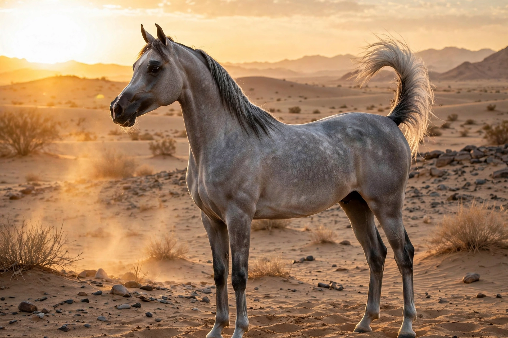

The Arabian or Arab horse is a breed of horse with historic roots in the Arabian Peninsula. With a distinctive head shape and high tail carriage, the Arabian is one of the most easily recognizable horse breeds in the world. It is also one of the oldest modern breeds: archaeological evidence suggests horses in the Middle East with similar characteristics date back thousands of years, and prototypical Arabians were established by Bedouin tribes who prized them as war mounts, breeding them for endurance, speed, alertness, and a close bond with humans.

| Arabian horse | |
| Country of origin | Arabian Peninsula |
|---|---|
| Height | 14.1–15.1 hands (57–61 in) |
| Distinguishing features | Dished head, arched neck, high tail carriage, one fewer lumbar vertebra |
| Use | Endurance riding, showing, pleasure, foundation sire breed |
Arabians have a wedge-shaped head with a broad forehead, large eyes, large nostrils, and small muzzles; many have a slight forehead bulge (the jibbah) and a concave ("dished") profile. The breed typically has one fewer lumbar vertebra, one fewer pair of ribs, and one or two fewer tail vertebrae than other horses, contributing to its compact back and high tail set. Coat colors recognized include bay, gray, chestnut, black, and roan.
Spread through trade and warfare, Arabian blood improved countless breeds. The Thoroughbred descends in the male line from three Arabian-line foundation sires (the Darley Arabian, Godolphin Arabian, and Byerley Turk), and Arabians contributed to breeds from the Morgan and American Quarter Horse to many European warmbloods. Famous historical Arabians include Napoleon's Marengo, the horses of the Crabbet Arabian Stud in England, and the Polish state studs at Janów Podlaski. Today the breed excels in endurance competition, where it dominates international events.